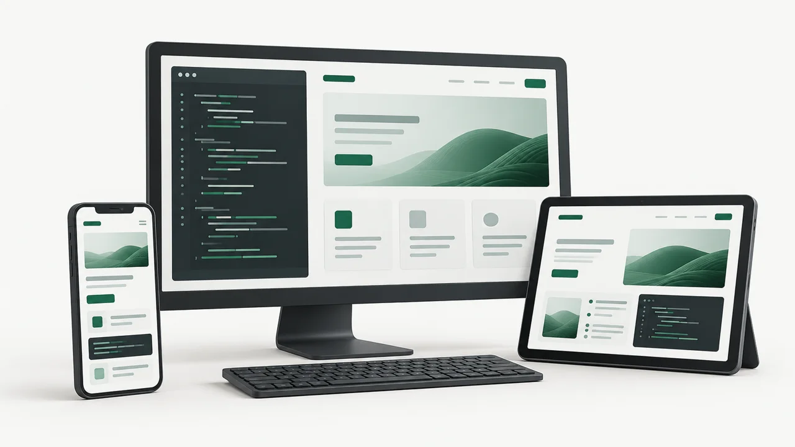

FaithCore
En desarrollo · Avance aproximado del 70 %. Estimación personal del autor.
Ver FaithCoreDesarrollador de software junior
Desarrollador de software junior enfocado en Java, Spring Boot y desarrollo Full Stack.
Mi pasión es crecer hasta convertirme en un excelente desarrollador sénior. Aprendo y construyo proyectos para avanzar hacia esa meta. Cuento con formación universitaria en desarrollo de software y formación técnica en pruebas.
Java · Spring Boot · React · Angular · MySQL
Ideas que toman forma
Me interesa crear experiencias claras, accesibles y adaptables: desde un computador hasta el celular.

Trabajo seleccionado
En desarrollo · Avance aproximado del 70 %. Estimación personal del autor.
Ver FaithCoreEn desarrollo · Avance aproximado del 70 %. Estimación personal del autor.
Ver CresposSitio estático · Mejoras v2.0 en revisión.
Ver Portafolio personal